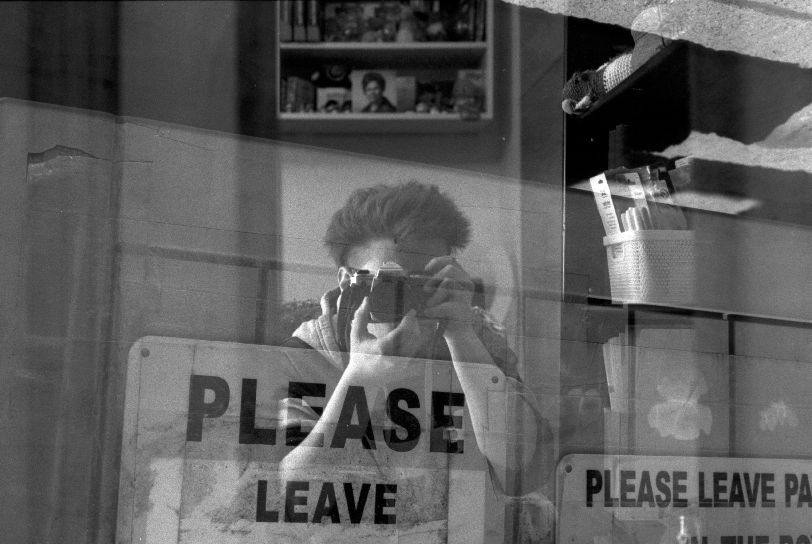
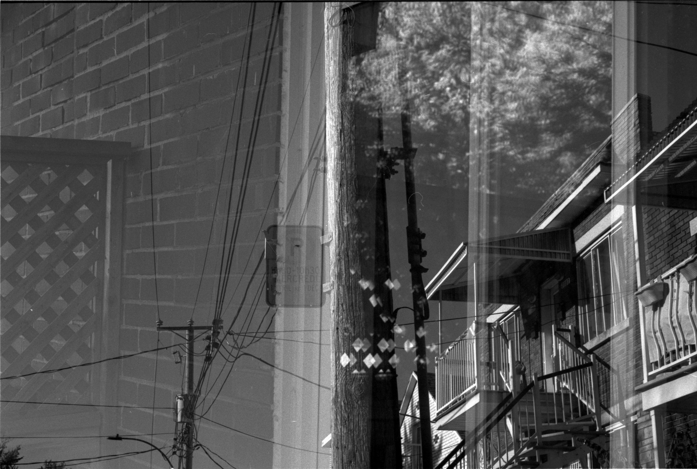

Apparitions
I made these double and multiple exposures on black and white film, without Photoshop or editing. I wanted to get the results straight from my camera, directly in the film, by physically placing/displacing myself from the scene or moving from one thing to the other—bringing things together by going to them, or like… taking them to each other. Seeing what sort of dis/appears from the work.
I feel like there is so much more that I can do and say by layering the photos… something that neither image alone could let me get at, but that comes from what happens when you bring things together.
I don’t necessarily have to know ahead of time what the photo might become. I still get to sort of discover what it will be through the process of making it, of exploring, of experimenting.